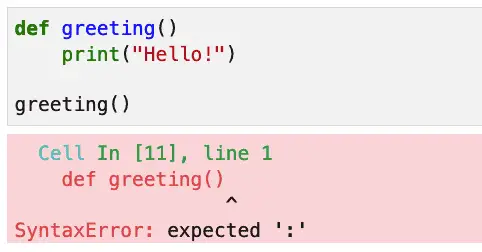
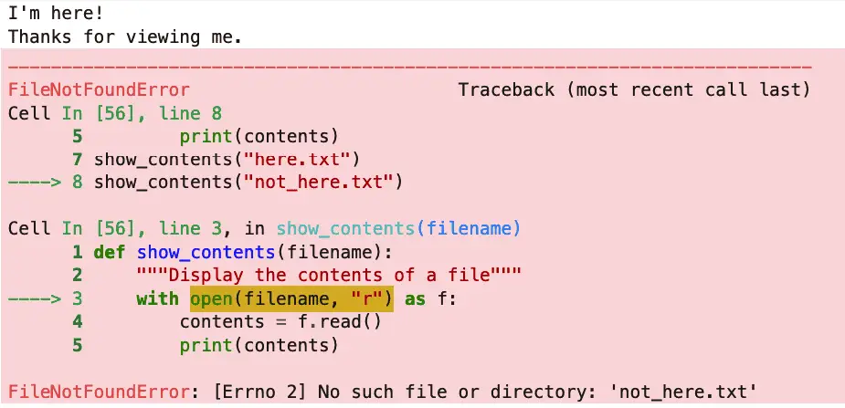
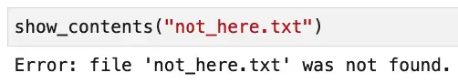

Table of Contents
Syntax Errors in Python
Indentation Errors
Exceptions, Errors, and Bugs
Exceptions and Errors
It’s Not a Feature; It’s a Bug
Try Block Basics: Handling Exceptions in Python
Handling Built-In Exceptions
Handling Base Class Exception Types
Handling Multiple Exception Types
Handling Base Class Exceptions: A Caveat
Raising Built-In and User-Defined Exceptions
Python Error Handling: Do’s and Don’ts
“To err is human,” and no one knows that better than software developers. In Python, as in other programming languages, learning to correctly and quickly fix the errors that we make – and to handle the errors our program can make – is an essential part of learning to program correctly. The difference between a program that handles errors well and one that does not is the difference between one that will delight your users or discourage them. For us developers, it means the difference between a system software that is easy to maintain and one that is opaque even to us.
This article will cover several aspects of successful error handling in Python, from the simple syntax errors that beginners make to discussing runtime exceptions and how to help our users be successful – whether we’re writing simple scripts for our use or serious production code for others.
The topics we’ll cover include the following:
Types of errors in Python
Python syntax errors vs. runtime exceptions
Handling exceptions
The difference between bugs, exceptions, and errors
Error handling mindset and best practices
Syntax Errors in Python¶
Syntax errors are errors that won’t even let us run our program. In other languages, these are sometimes called “compiler errors,” meaning that the parser doesn’t recognize whatever you typed as valid. Syntax errors are especially common for beginner programmers and even senior engineers who are either learning a new programming language for the first time or “context switching” between languages.
When the Python interpreter encounters a syntax error will try to point you to where the error appeared. Here’s a screenshot showing one such error:

If you’re a beginner, the critical skill to master here is to note that the error message often tells you exactly where and what you need to fix. In this case, changing the first line to "def greeting():” fixes the error, just as the error message advises.
Indentation Errors¶
Another error newcomers often make (especially if they switch editors a lot) is an indentation error, which is another flavor of syntax error raised when indentation is incorrect.
This error is somewhat unique to Python since Python uses indentation to identify “block structure” – lines that belong together. Other languages use keywords or curly braces to do the same thing.
Here’s an example of incorrect indentation that’s relatively easy to fix:

When correctly formatted, the lines after the if and after the else should have an additional level of indent, as shown here:
def greeting(name=None):
if name:
print("Hello " + name)
else:
print("Hello, world!")
greeting()
# Outputs: Hello, world!
Indentation errors can be harder to fix when they involve mixed tabs and spaces since sometimes it won’t be immediately obvious where the problem lies. It’s best to pick an editor with good Python support, such as VSCode (with the Python extension) or PyCharm. These editors will automatically follow PEP8 guidance of four spaces per indent level. They also include tools to reformat a Python file if it’s already indented incorrectly.
Exceptions, Errors, and Bugs¶
Exceptions and Errors¶
In Java, there’s a strict distinction between the two classes, Error and Exception. An exception, also called a checked exception, must be handled in your program or it won’t compile. An error, on the other hand, does not need to be caught. The rationale behind leaving errors unchecked is the idea that your program can’t recover from them.
In Python, exceptions are always unchecked. This means that it’s up to you whether you want to handle it or not. So the line between an exception and an error is much less clear-cut. Syntax errors are always called errors, but exceptions can be named either way. For example, “OSError” is a runtime exception.
So errors and exceptions are pretty much synonyms in Python, and non-syntax errors have the following characteristics:
They happen while our program is running.
We can handle them or not. Generally, for anything going to production or another user, they should be handled and either presented as a more friendly error message or logged.
It’s Not a Feature; It’s a Bug¶
Let’s take the case of selecting a user by email from a database table. We can probably all agree that if that wrong table name is wrong in our code, it’s definitely a bug. It’s also a bug if the user email is not in the table and we just let the low-level exception message bubble up to the user as a nasty “500 error” (for example), instead of formatting it nicely and allowing the user to fix it.
In either case, bugs result from either code that’s so bad it doesn’t work at all or code that’s just good enough to hobble along but doesn’t provide a good user experience.
Bugs fall into many categories, so it’s impossible to cover them comprehensively, but certainly, many of them result from poor or inadequate error handling. Because this is so important, we want to discuss some best practices for handling or preventing errors.
However, before discussing best practices, we should first ensure that we have a solid grasp of the basic mechanics of exception handling in Python. This is the topic of the next section.
Try Block Basics: Handling Exceptions in Python¶
Handling Built-In Exceptions¶
Python supports many different built-in exceptions that can happen at runtime. We might try to add two types, like a string and a number, which results in a TypeError. We might open a file for reading that isn’t there and get a FileNotFoundError. We can wrap the code that might generate such an exception in a try / except block to handle such cases. Suppose we have this code:
def show_contents(filename):
"""Display the contents of a file"""
with open(filename, "r") as f:
contents = f.read()
print(contents)
show_contents("here.txt")
show_contents("not_here.txt")
Because I’m a nice person and I’m not trying to trick you with the file names, you’ve probably already guessed that “not_here.txt” will cause some difficulty. Unhandled exceptions generally look ugly, and this exception (that gets generated) is no exception (to the general rule). Here’s our output (cover your eyes for a minute):

Fixing this is straightforward. We show the code we’ve added to the show_contents function in bold below:
def show_contents(filename):
“””Display the contents of a file”””
try:
with open(filename, “r”) as f:
contents = f.read()
print(contents)
except FileNotFoundError:
print(f”Error: file ‘{filename}’ was not found.”)
show_contents(“here.txt”)
show_contents(“not_here.txt”)
We now display the error in a much more user-friendly way:

Reviewing the syntax for that fix, it was this:
try:
statements that might throw an exception
...
except ExceptionType [as variable_name]:
code to if exception happens
In the example above, we didn’t capture the exception. We don’t always need it, especially when we want to display a user-friendly message so the user can fix the problem.
The example below shows how to capture the exception as a variable and write it to a log.
"""Logging an exception: logging_example.py"""
import logging
def show_contents(filename):
"""Catch an exception with variable name"""
try:
with open(filename, "r") as f:
contents = f.read()
print(contents)
except FileNotFoundError as ex:
logging.exception(ex)
show_contents("not_here.txt")
Output:
ERROR:root:[Errno 2] No such file or directory: 'not_here.txt'
Traceback (most recent call last):
File "/Users/johnlockwood/source/CodeSolid/all-private/articles/errors/logging_example.py", line 8, in show_contents
with open(filename, "r") as f:
FileNotFoundError: [Errno 2] No such file or directory: 'not_here.txt'
The effect of this is to display it to the console by default but see the Logging Cookbook for many examples of how to configure logging in different ways.
Handling Base Class Exception Types¶
Some additional rules apply to Python except blocks. First, given a class hierarchy, an except block for a base class will match that type and any types derived from that base class.
Thus, for example, we could replace FileNotFoundError in the examples that we’ve shown so far with OSError (or IOError, which is an alias for it) and get the same results. For example:
# ...
try:
# ...
except OSError as ex:
print(ex)
# ...
The nice thing about this change is that we will now log all the errors that derive from OSError – not just FileNotFoundError. When dealing with files, a file not being there is only one thing that can go wrong. We also have to consider that the user might not have permission to read it. Let’s say we change our test to read:
show_contents("unreadable.txt")
Before running our code, we could create a file we don’t have permission to read (at a terminal, assuming you’re on Mac or *nix or perhaps WSL in Windows):
# Create a file:
touch unreadable.txt
# Make it write-only
chmod 200 unreadable.txt
Now when we run our code, it displays the following error message:
[Errno 13] Permission denied: 'unreadable.txt'
Handling Multiple Exception Types¶
For each try block, we can add multiple except blocks, for example:
try:
# Open a file, etc.
except FileNotFoundError as ex:
print(f"File {filename} doesn't exist")
except OSError as ex:
logging.exception(ex)
In this example, we print a user-friendly message if the file is not found, but if anything else happens, we log the error.
Note that FileNotFoundError is derived from OSError, so it must come before OSError to make this work. This makes sense because of the point we made earlier – that a base class except block will catch any exceptions of a derived class. Because of this, the base class must come last because it is a “catch-all”.
Handling different related exceptions differently can be helpful for the following cases:
You need highly customized error messages for the end user rather than a reasonable default.
Depending on the exception, a different team may need to look at it. There may be some Exceptions that are user errors, for example, but others that a developer on the team needs to investigate.
For other cases, we can weigh the improved granularity of specific exceptions with the increased code complexity. More isn’t always better.
Handling Base Class Exceptions: A Caveat¶
If you’re trying to handle any possible exception your program can raise, you need to be aware of two things. First, if you’re using PyCharm, it will warn you that your exceptions should be more granular. I don’t always follow this advice, but one thing you definitely shouldn’t do is this:
# DON'T DO THIS!!!
# ...
except BaseException:
# ...
The reason is that BaseException is the parent of all exceptions in Python. This includes exceptions you should catch as well as many exceptions that you shouldn’t. Some examples of exceptions you shouldn’t catch include the user hitting the interrupt key (typically CTRL-C) to quit the program or the exception that’s raised when a generator or coroutine is closed.
Generally speaking, when catching a category of exceptions, you should only go as high up as you need to go. However, if you really need to ignore PyCharm’s warning and catch everything, then “except Exception” is your friend.
The Exception class in Python is the root of many exception classes defined in Python, and it’s also meant to be the root of any user-defined exceptions you might create.
Raising Built-In and User-Defined Exceptions¶
In addition to handling exceptions, you can also raise them, using the raise keyword and an instance of an exception class. Here’s a contrived example:
def order_widget(widget):
# Gadgets are dangerous
if widget == "gadget":
raise Exception("Gadgets make our warehouse catch fire. Sorry.")
print(f"Placing an order for {widget}. Thanks!")
If an order is placed for a gadget, the line ordering the widget will never be reached, because an exception will be thrown.
There are a couple of things to point out about this code. First, if you raise an exception in your application code like this, it needs to be in the context of an “outer” exception handler in the same function, or a function calling you, etc.
Secondly, for a case like this where we’re doing input validation, we can sometimes simplify it by using Python’s assert keyword instead of raise. If we know our user interface code doesn’t allow gadgets to be entered in our present code, we might still add a defensive assert in case that changes:
def order_widget(widget):
# Don't send widgets. Remember what happened to Crispy Bob
assert widget != "gadget"
print(f"Placing an order for {widget}. Thanks!")
I’m going to miss Crispy Bob.
In application code, we often need to handle exceptions rather than raise new ones. Raising exceptions does incur some overhead. Also, the application may be able to handle the condition in another way, like wrapping the gadget in a fireproof gadget purse.
However, it’s often the case when developing a module or library that we’ll need to create user-defined exceptions and raise them when something goes wrong. If this is something you need to do or are considering doing, we have a separate article that discusses how to design and write Python custom exceptions.
Python Error Handling: Do’s and Don’ts¶
Now that we’ve covered the syntax and examples of handling Python errors, it’s time to take a step back and discuss some general strategies for dealing with program errors. Some of this will recap what we’ve discussed along the way, but some of it will be new.
DO: Use Python’s help function to understand what exceptions a function will raise. For example, the beginning of text returned by
help(open)tells us that this function will “Raise OSError upon failure.”To support this for other developers who use code you write, you should provide a docstring comment for every function that tells the user what exceptions might occur. This is especially important for library developers, but it’s a best practice in application development as well.
DO: Avoid long chains of complex “except” clauses unless you have a good reason for them. Catching a well-chosen base class that’s common to every class of error that might be thrown might simplify your code. But see the next point as well.
When handling a base class exception, only cover the necessary cases. You should never write “
except BaseException” and use “except Exception” sparingly as well.DO consider using
assertfor input validation for “backend” (non-user-facing) code. Don’t use it if you need to display a friendly user message.DON’T rely on exceptions for simple flow control, and try to write code that makes exceptions rare. For example, if you’re creating a function that returns a list, don’t return None if there are no elements – return an empty list. Checking the length or using a loop in the caller will work as expected, not raise an exception.
Exceptions should really be exceptional – things that shouldn’t happen often if at all. Consider using error codes and error messages for functions that can have more than one expected error condition.
DO know what error codes are expected for the domain you’re programming. For example, web APIs should return well-known HTTP error codes. (See the class http.HTTPStatus in the Python runtime library, for example).
DO add logging to any kind of server or backend code with no direct user interface. This includes model and controller code in Flask, Django, etc., as well as AWS Lambda functions and other service code.
Unless doing so would expose Personal Identifiable Information (PII), which should not be included in the logs, logging should include call stack information to simplify troubleshooting. As we’ve seen,
logging.exceptioncan be used to do this.Use a function in the logging module appropriate to the information you’re providing. If it’s not an error, use debug or info.
Server output should be sparse (not displaying debug or info level detail) by default, but to do that effectively, you should have a way to change the logging level of the server dynamically without re-releasing the software.
DO spend enough time getting logging right. Remember, it’s not a question of whether something will happen in production. Something will happen in production, so the choice is to add logging during the day when you’re fresh or do it under pressure at night while listening to big shots complain on an all-hands call. Make it easy on yourself and do it during the day.
DO make sure your test cases cover exception cases in addition to the “happy path.”
DO keep logging and error handling simple. Sometimes software developers can get carried away writing sophisticated frameworks for things. In general, however, Python has all the tools you need for logging and error handling as part of the runtime library.
OK, that’s a long list, but an important one. There have been many software magic bullets over the years that were going to help us create better software, but effective error handling is one that has withstood the test of time. Using Python’s error-handling tools is hardly glamorous work, but the result is professional-quality software.